We’re living in a golden age of web browser choice. But before I begin this story, I need to take you back to 2006. You see back in 2006 as a young technologist, my choices of a web browser were limited. It was either Internet Explorer or Mozilla Firefox. But then one day while browsing through PC World magazine, I discovered an alternate option – Opera.
Opera had many differentiated features such as a customizable streamlined user interface as well as being more memory efficient and faster than Firefox. There were many other features that made Opera my go-to browser but the most important for my browsing on a 256 Kbps turned out to be the “Instant-back”. Normally, when you press the back button in a browser, it will try to reload the page but in Opera the page loaded from cache, so the back action was instant!
Google has a say
In September 2008, everything changed when Google decided to enter the browser market with Chrome. I remember downloading the first beta of Chrome and thinking this is fantastic! What Chrome was lacking in features, it made up in speed. Since then, Chrome has gained massive popularity and become the most popular browser in the market. These days, Chrome enjoys a position of dominance that Internet Explorer once held. All new websites were developed to work with Internet Explorer, something which developers do for Chrome today. Looking at the Google trends chart over the last 15 years below will give you an idea of how Chrome’s popularity has risen over time.
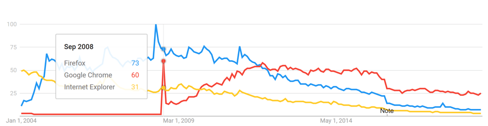
The “Other Chromes”
Along with the release of Chrome, Google also provided majority of the source code used to build Chrome in the form of Chromium project. Using this source code, many other companies have been able to build alternate browsers on the same stable and fast engine that powers Chrome. Free from having to invest resources in building and maintaining a rendering engine, these companies have been able to focus on adding features that are missing from the Chromium source such as syncing of settings and bookmarks as well as features that are sometimes not even available in Chrome (e.g. Opera introduced video pop out 2 years before Chrome). And because these browsers are built on a Chromium source, they are able to access the extensions in the Chrome Web store as well.
I’m calling these browsers - “The Other Chromes”. This blog is a summary of the budding alternate Chromium based browser market and how these browsers are vying to take market share away from Chrome with their unique features. These browsers have been increasing in number as well as popularity. Part of the charm of these browsers is that they allow privacy focused users to step outside of Google’s ecosystem without compromising on performance.
Opera
Before adopting Chromium projects WebKit engine and later Blink engine in 2013, Opera developed its own Presto engine. With the move to the Chromium source, Opera lost many of its distinctive features such as integrated Opera mail. Since then, Opera has been busy differentiating itself from Chrome with its unique features. Here are some of the standout features:
1. Video Picture-in-Picture (PiP) – I find this the most impressive feature of Opera. Video PiP was introduced in April 2016, which is a full two years before Chrome got the same feature. Still, I find Opera’s picture-in-picture more useful. Currently, Chrome’s PiP requires two right clicks to activate compared to Opera which has a dedicated floating button on the video to activate PiP. Opera’s PiP is also a lot more useful as it shows video controls such as the video name, button for skipping to next video, volume control and video time indicator. You can even click the video name in the PiP window to be taken back to the tab in the browser! Chrome has a barebones floating window with just pause/resume capability. Here are some screenshots to compare the two (Opera on left, Chrome on right): 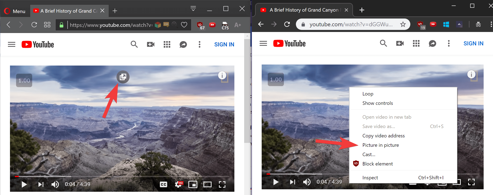 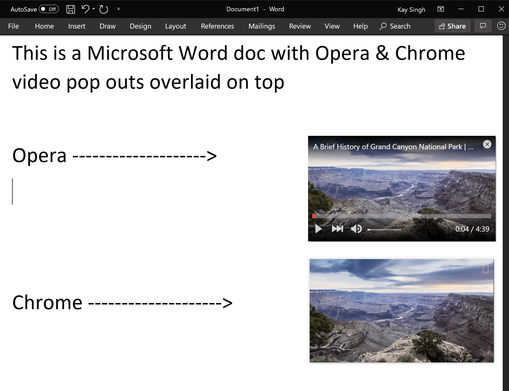
2. Integrated adblocker – Opera was also the first browser to integrate an adblocker in 2016. Chrome recently introduced this functionality in 2018 but it only blocks a subset of ads which don’t conform to the Coalition for Better Ads guidelines. It’s not surprising to see Chrome not blocking all kinds of ads given Google’s ad-based business model.
3. Built-in VPN – In 2016, Opera also added a free built in VPN for enhanced privacy.
4. Opera Turbo – Turbo is one of the oldest Opera features which helps with browsing on slow connections. When this mode is turned on, all the traffic passes through Opera’s servers where it’s compressed, and your device receives a fraction of the original size of the content.
5. Other notable features included in Opera are
For full list of features see https://www.opera.com/computer/features
In addition to the above features, Opera has also launched a new concept browser dubbed - “Opera Neon” which reimagines the way we browse the web. Here’s a short video
Vivaldi
Vivaldi is a recent entrant that was founded by Opera co-founder and former Opera CEO. Vivaldi is intended for the users who were disgruntled by Opera’s switch from Presto layout engine and loss of many loved features. Vivaldi offers an insane level of customization for its user-interface! The default UI uses the dominant color on the website for its accent color which makes the browser UI look like an extension of the webpage. Here are few examples
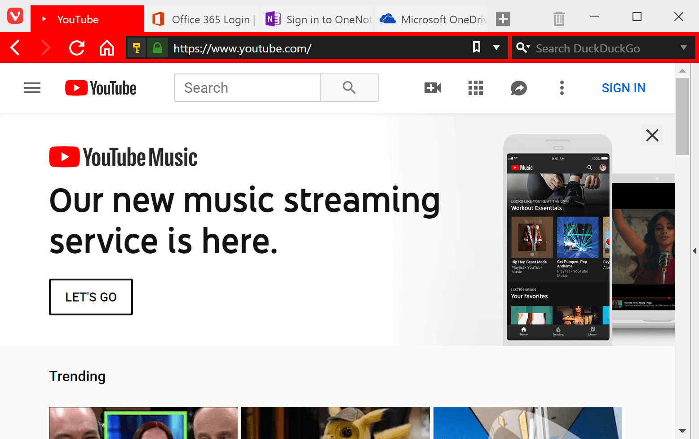 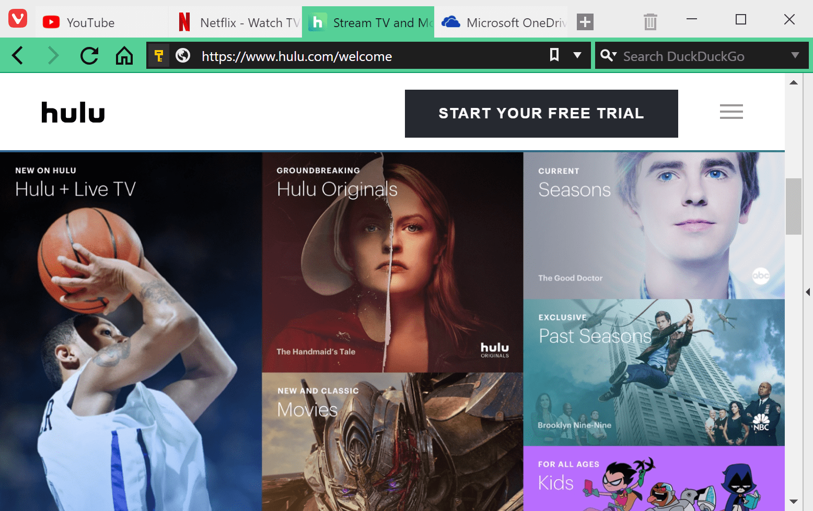 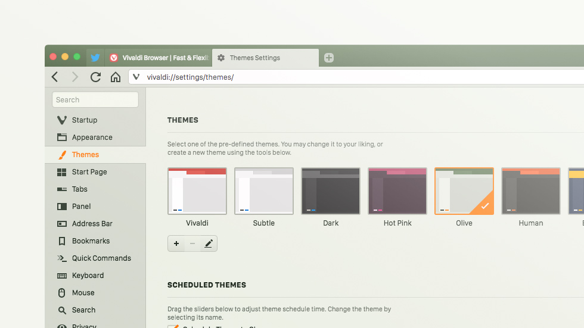 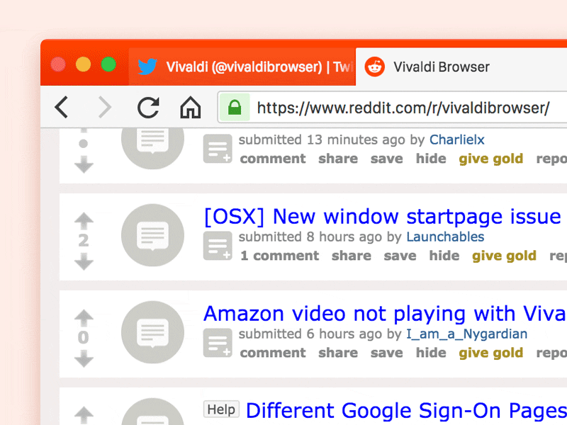
Vivaldi has tons of other customization features which can be viewed here https://vivaldi.com/features/. Here are some of my favorites:
- Tab stacking allows grouping of tabs
- Tabs can be viewed in split screen in the same browser window
- Built in tab hibernation support
- Ability to customize the browser theme to your liking
Brave
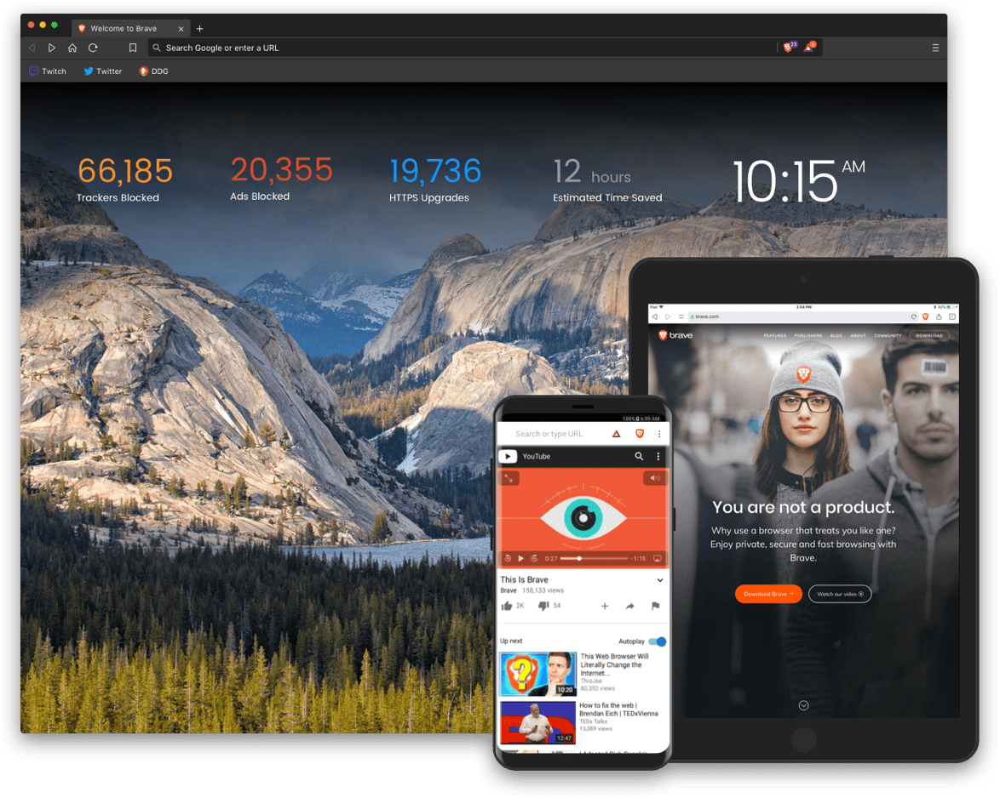
Brave is the most recent entrant in the built-from Chromium browser space and one which has the most unique take. By default, Brave comes with Brave shield, which blocks tracking cookies and ads. Brave shield will also upgrade your connection to HTTPS whenever possible. Here’s what Brave shield looks like:
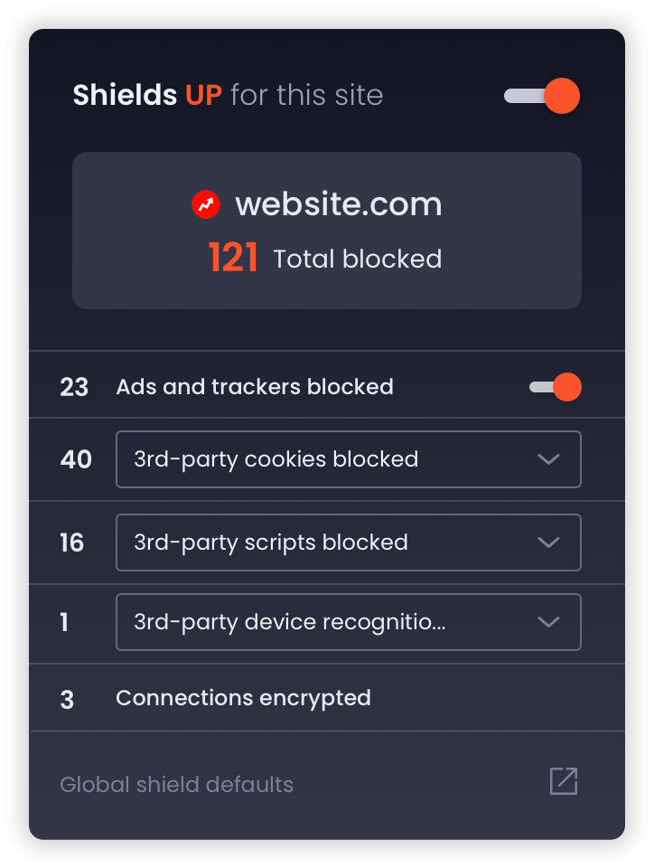
Blocking ads by default sets up a dangerous precedent for the health of the web as many of your favorite sites depend on ad-revenue. However, Brave offers an elegant solution for the publishers as well as the users.
In the first phase launches which launches soon, users can opt-in to view the ads and receive up to 70% of the gross ad revenue.
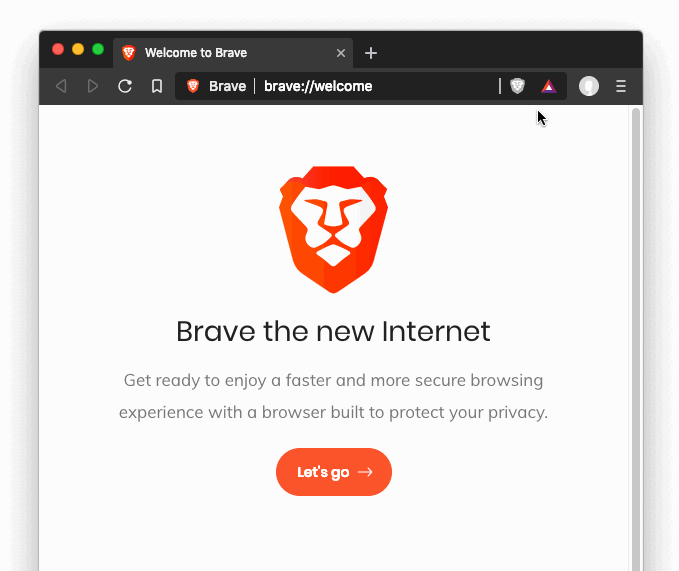
Since Brave is built with privacy in mind, users get a notification to view an ad at a time that the browser finds appropriate and not disruptive.
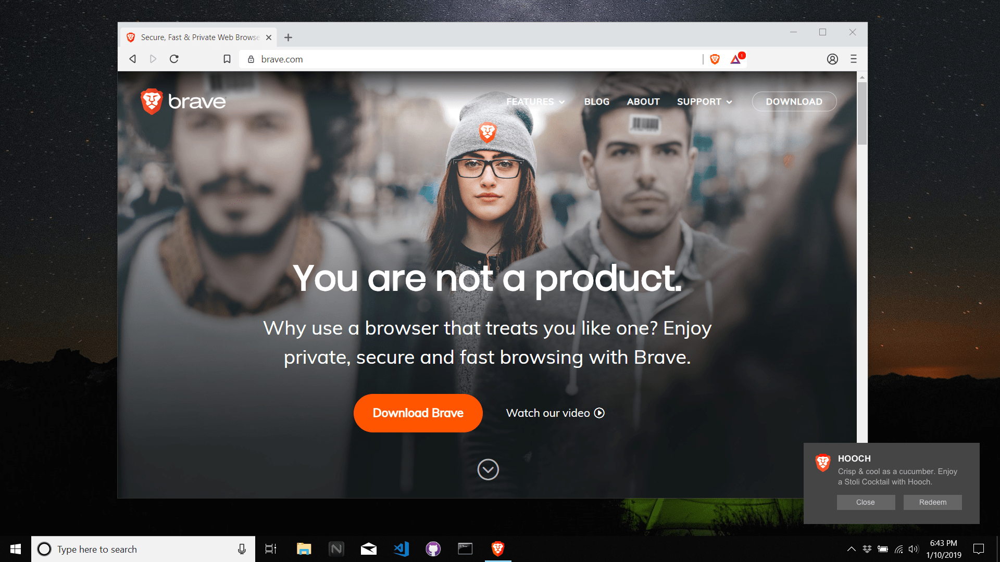 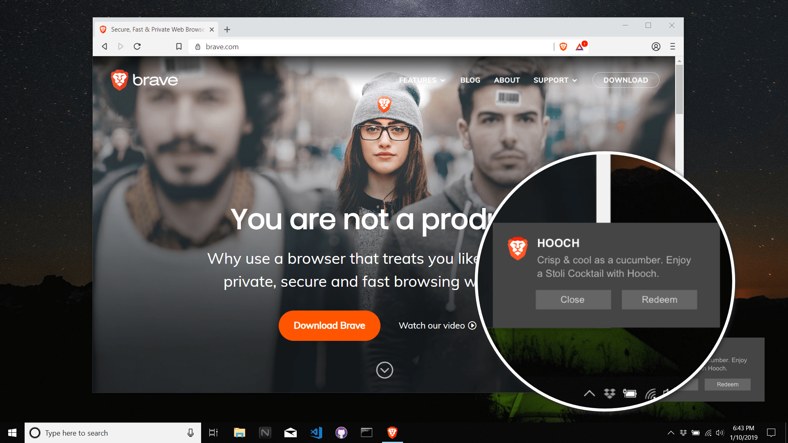
When users click to engage with these notifications, they’re presented with a full-page ad in a private ad tab. Brave Ads are opt-in, and do not replace ads on websites.
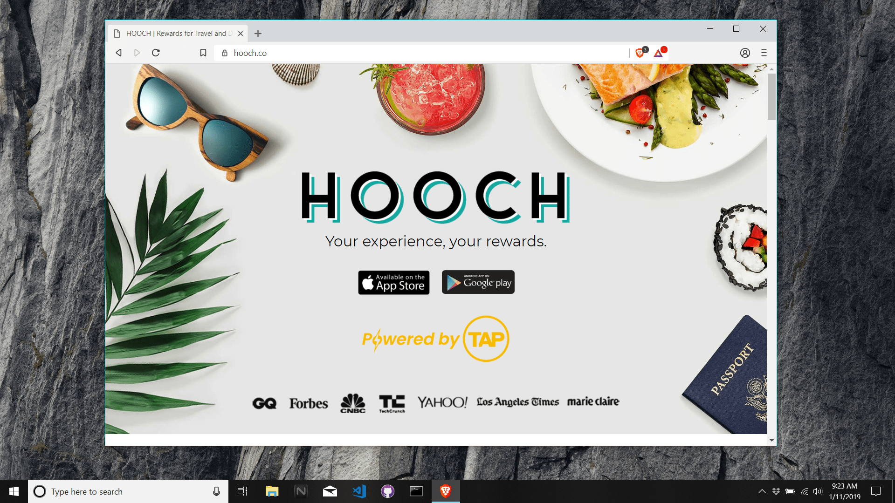
The second phase of Brave’s ad system will launch later this year. In the second phase, Brave will partner with publishers to replace ads in the websites users visit. In this model, the publishers will get 70%, users will get 15% and Brave will get 15% of the ad revenue. More on this can be found in this blog post
Brave’s ad-system will be a tough sell for both users, who are used to blocking ads with various ad-blockers and publishers who will have to sign up for a different system for serving ads. It will be interesting to see if this model will end up being successful and if it changes the way we browse the web.
Microsoft Edge
The most recent and shocking announcement in the browser space has been Microsoft’s decision to stop development on its own EdgeHTML rendering engine and Chakra javascript engine and re-build Edge based on Chromium source. Given Chrome’s dominance in the browser market and Edge’s failure to gain significant traction, it is understandable why Microsoft made this decision. This leaves Mozilla Firefox as the only other mainstream browser that implements its own rendering engine. What this means for web standards and website compatibility is yet to be seen as developers might choose to optimize their websites for Chromium based browsers only.
Mobile
On smartphones and mobile devices, you’ll find even more browsers that are built from Chromium source. Here are just some of the most popular ones:
- Samsung Internet Browser
- Amazon Silk Browser
- Kiwi Browser
- Bromite
- Ecosia
- Brave
- Opera
Although many of these browsers might look like Chrome, they offer additional capabilities like native ad-blocking capability (Brave, Kiwi, Bromite), night mode (Kiwi), ability to move navigation bar to bottom (Kiwi) or the ability to play Youtube videos in the background (Kiwi, Bromite).
Looking forward
2019 is going to be an interesting year for Brave & Vivaldi. For Brave, it will be the first true test of it’s new ad system. For Vivaldi, which is much further along and more feature complete it will be interesting to see if it can attract long time Chrome users. For Opera, I expect to see more unique features as well as keeping an eye out to see if they go anywhere with their Neon concept.